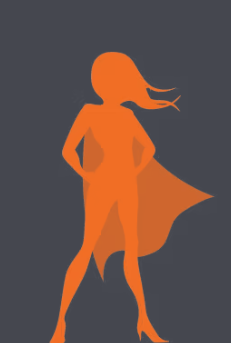
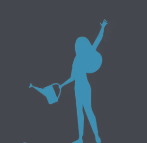
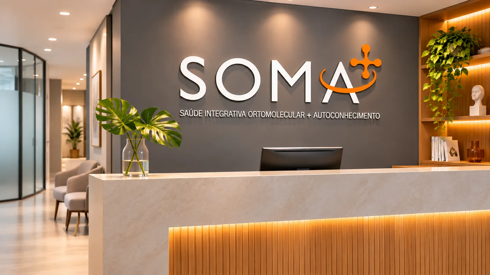
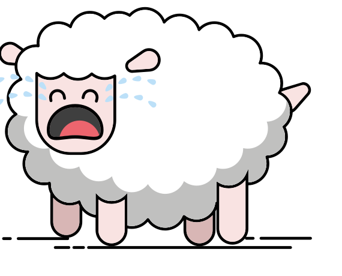
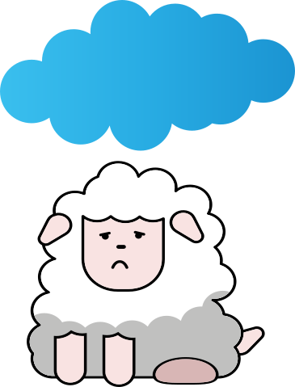
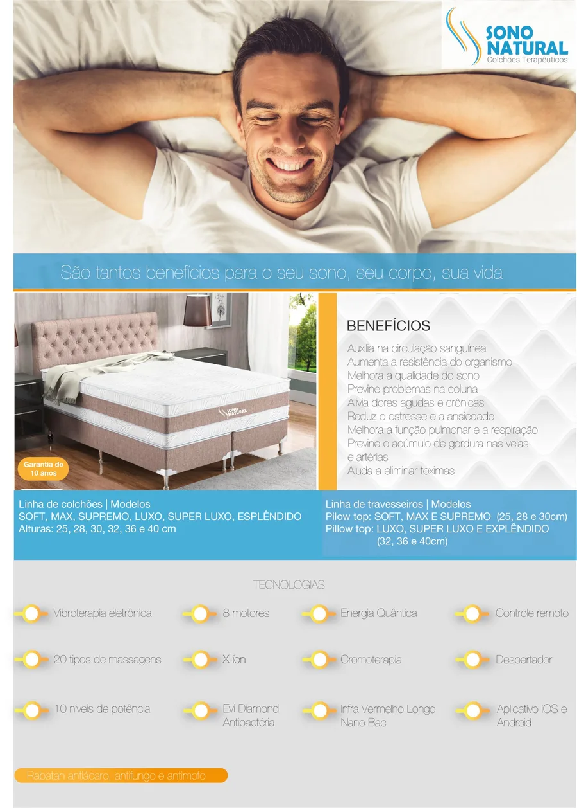
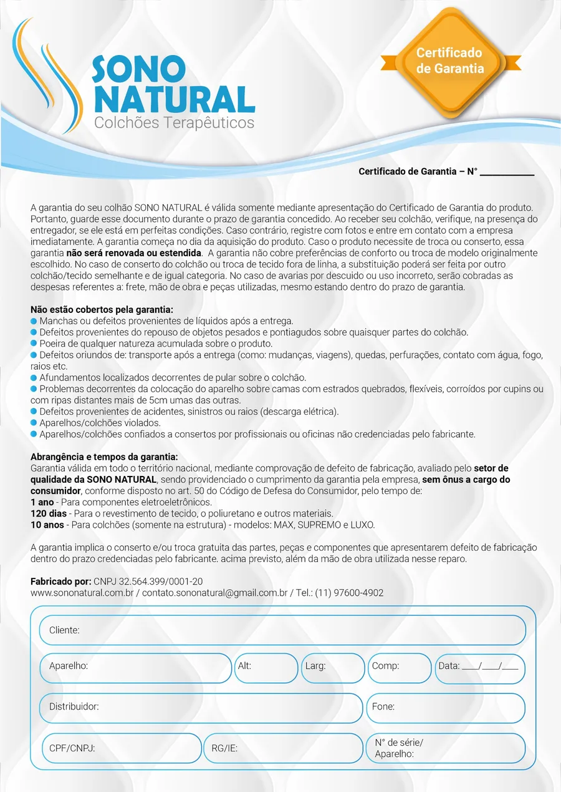
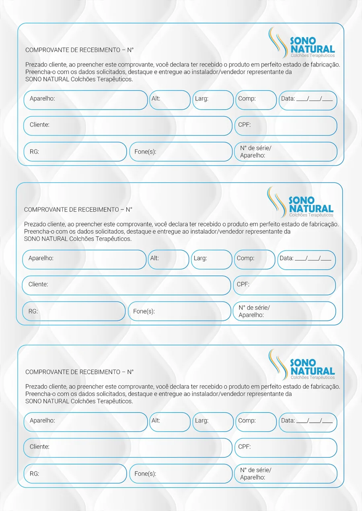
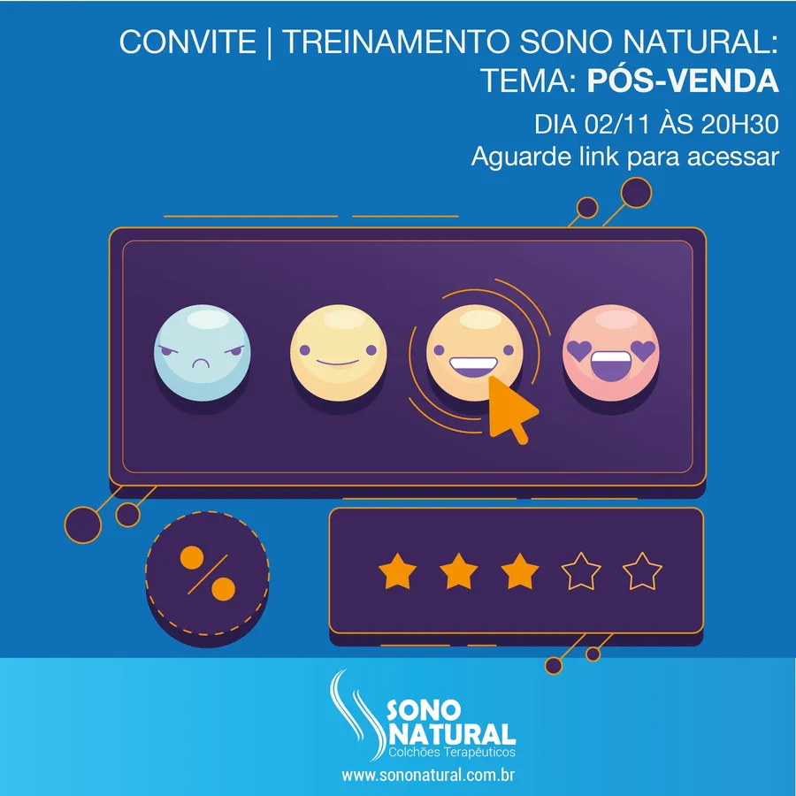

SOMA e Sono Natural
Uma marca-mãe e sua primeira marca de produto. A SOMA nasceu para levar a terapia ortomolecular e a saúde integrativa a mais pessoas, e o colchão Sono Natural foi o primeiro produto a chegar ao mercado com ela. Do plano de mercado ao lançamento comercial, criamos os dois nomes e as duas marcas.
Desafio
A SOMA começou como um projeto: uma empresa de terapias ortomoleculares, cursos, conteúdo e produtos naturais, ainda sem nome, sem marca e sem um caminho definido até o cliente.
Junto com ela vinha o primeiro produto, um colchão com tecnologias terapêuticas. Ele precisava falar com um público muito maior que o dos tratamentos, sem perder a ligação com a empresa que o vende.
Plano de mercado
Antes do nome, o mercado. Mapeamos o público de cada marca, a concorrência, os canais de venda e a política de preço, e organizamos a forma de trabalho da empresa para o lançamento.
Público
- Quem compra cada marca e o que procura
- Os tratamentos para um público, o colchão para um público bem mais amplo
Concorrência
- Quem disputa o mesmo cliente
- Onde estava o espaço para as duas marcas
Canais
- Venda com representantes e distribuidores
- Site e redes sociais
Preço
- Política de vendas e de preço
- Formas de pagamento, garantia e frete
Naming
SOMA diz a proposta da empresa em uma palavra: somar ideias, pessoas, informações, novos hábitos e soluções. No logo, o + sobre o A é ao mesmo tempo soma, molécula e saúde, e a órbita liga o símbolo ao nome.
Sono Natural fala do benefício, e não da técnica: o sono que volta a ser natural. O descritor Colchões Terapêuticos diz o resto.
A proposta da SOMA é sempre somar.
Mapa da marca
A plataforma da SOMA, que orienta a marca-mãe e tudo o que ela assina.
Filosofia
- Clientes satisfeitos
- Marcas e produtos que beneficiam o cliente
Posicionamento
- Soluções em terapias ortomoleculares, conteúdo, cursos e produtos naturais, com qualidade e inovação
Missão e visão
- Melhorar a qualidade de vida da população brasileira
- Ser referência de excelência em terapias ortomoleculares
Arquétipo
- Herói, que motiva as pessoas a cuidar da própria vida e a construir novos hábitos
Valores
- Ética e transparência
- Empatia e respeito às pessoas
- Respeito à diversidade e à inclusão
Sempre somar
- Ideias, pessoas, informações, hábitos, soluções, habilidades e conteúdo


Identidade
O nome em Gill Sans, com espaçamento aberto e em cinza, e o + em laranja e amarelo, construído numa malha que parte da haste do M. A paleta é quente e acolhedora: laranja, amarelo, cinza, grafite e areia.
Os ícones repetem o desenho do símbolo: traço cinza com as pontas terminando em nós laranja, como os braços do +.



Papelaria e brindes
Arquitetura de marcas
A SOMA é a marca-mãe e organiza seus produtos em dois níveis. O Sono Natural é uma marca endossada: tem nome e identidade próprios, fala com um público mais amplo e assina como “uma marca SOMA”.
As linhas SOMA, como a Linha Balance, não têm logo próprio e levam a marca-mãe diretamente.
Sono Natural
O colchão reúne oito tecnologias, e a marca precisava traduzir tudo isso numa promessa simples: dormir bem e acordar melhor. Os atributos guiaram cada peça: sono de qualidade, tranquilidade e energia ao acordar.
No arquétipo do Cuidador, o Sono Natural cuida do descanso de quem dorme e da família inteira. Na comunicação, o benefício que a pessoa sente vem antes da técnica, e o humor fica com o carneirinho, que perdeu o emprego: quem dorme num Sono Natural não precisa mais contar carneirinhos.
Poxa, era pra Elaine contar carneirinho esta noite…


O humor do carneirinho nas redes
Lançamento comercial
Com as marcas prontas, estruturamos o lançamento: a apresentação comercial para a equipe e os parceiros, a pasta portfólio, o folheto, o manual, o certificado de garantia e o comprovante de recebimento, o site do Sono Natural e a implantação das redes sociais.
A força de vendas passou por treinamentos online, sobre temas como formas de pagamento e pós-venda, cada um divulgado com o seu convite.





Convites para os treinamentos
O que entregamos
Do plano de mercado ao lançamento das duas marcas.
Plano de mercado
- Público e concorrência
- Canais e política de preço
- Forma de trabalho para o lançamento
Naming
- Criação dos nomes SOMA e Sono Natural
- Tagline e descritores
Estratégia
- Mapa da marca e posicionamento
- Missão, visão e valores
- Arquétipos, mapa de personalidade e jornada
Identidade SOMA
- Logo e malha de construção
- Paleta, tipografia e ícones
- Arquitetura de marcas e guia da marca
Sono Natural
- Logotipo e universo visual
- O carneirinho
- Camadas e tecnologias
Lançamento
- Apresentação comercial e treinamentos
- Pasta, folheto, manual e certificado
- Site, campanha digital e redes sociais